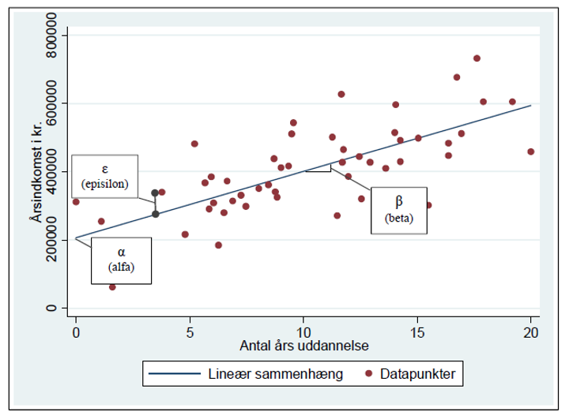
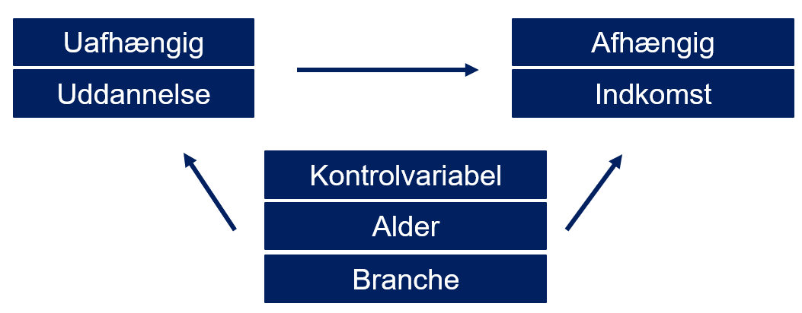

Antagelser er betingelser eller forudsætninger, som skal være opfyldt for, at resultaterne fra regressionen er pålidelige og gyldige
Her berør vi de mest centrale antagelser bag OLS for dette kursus
Regressionsmodellens antagelser
Vores data kommer fra en simpel tilfældig stikprøve, der afspejler den population, som vi er interesserede i at undersøge (ellers kan vi ikke arbejde med inferens)
Regressionsmodellen er lineær i parametrene og fejlleddet
Ingen af de uafhængige variable må være en konstant eller lineær kombination af de andre uafhængige variable (dvs. ingen eksakt multikollinaritet)
Residualerne skal være homogent fordelt (dvs. ingen heteroskedasticitet)
Residualerne skal være uafhængigt fordelt (ingen autokorrelation)
Modellen er korrekt specificeret (dvs. alle relevante variable er med (OVB) og ingen irrelevante variable er med
Endogenitet
Stikprøve
1 Vores data kommer fra en simpel tilfældig stikprøve, der afspejler den population, som vi er interesserede i at undersøge (ellers kan vi ikke arbejde med inferens)
I statistik drages der konklusioner om en population på baggrund af en stikprøve (inferens). Slutningen er baseret på:
I. Repræsentativitet (stikprøvens sammensætning ligner populationens mht. relevante karakteristika)
II. Tilfældighedaf stikprøveudtræk (mindsker risiko for skævhed i stikprøven og er derved et middel til at forøge repræsentativitet)
Linearitet
2 Regressionsmodellen er lineær i parametrene og fejlleddet
I lineær regression tegnes en lige linje, der beskriver sammenhængen mellem en afhængig variabel Y og en (eller flere) uafhængig variable X
H√¶ldningskoefficienterne for den uafh√¶ngige variabel, ùõΩ, repr√¶senterer stigningen i Y, n√•r X stiger med 1
Vi antager, at for hver enhedsændring i, vil ændringen i Y være konstant og proportional til X, og dette forhold er lineært
Multikollinaritet
3 Ingen af de uafhængige variable må være en konstant eller lineær kombination af de andre uafhængige variable (dvs. ingen eksakt multikollinaritet)
Multikollinaritet opstår, når der er stærk korrelation mellem uafhængige variable
\[
cov(X_1, X_2)
\]
Som udgangspunkt inkluderer vi kun flere uafhængige variable i vores model som kontrolvariable, fordi vi mistænker, at der er såkaldte ”confounders”. Dermed antager vi også, at de korrelerer
Multikollinaritet
Meget stærk korrelation mellem uafhængige variable giver dog problemer, da OLS-algoritmen kan have svært ved at adskille deres indflydelse på den afhængige variabel, hvilket kan føre til upålidelige og inkonsekvente parameterestimater:
Større standardfejl på parameterestimationerne
Høj \(R^2\) på trods af insignifikante parameterestimater
Små ændringer i data giver store ændringer i parameterestimater
Det bliver sv√¶rere at fastsl√•, hvad den enkelte variabel bidrager med til ùëÖ2.
Multikollinaritet
Hvornår oplever man typisk multikollinaritet?
Nært beslægtede variable (f.eks. indkomst og skattebidrag)
Polynomier
Dummier – udelades der ikke en dummy-kategori til som referencekategori opstår perfekt multikollinaritet (R vil smide den skyldige variabel ud af modellen)
Hvad afslører multikollinaritet?
Underlige parameterestimater
Høj \(R^2\) på trods af insignifikante t-værdier
Omvendte fortegn på parameterestimaterne i forhold til hvad vi teoretisk forventede
Multikollinaritet
Hvad kan vi gøre ved multikollinaritet?
Dummier: forhold dig til din referencekategori! Hvilken kategori vil du sammenligne de andre med
Lav en korrelationsmatrice over variablene i modellen for at afsløre, hvilke variable der er problemet
Overvej om det er meningsfuldt at inkludere variablene på en anden måde (f.eks. som dummier)
Plot af korrelationsmatrice (Stærkere farver indikerer stærkere korrelationer)
library(ggcorrplot)ggcorrplot(corr)
Heteroskedasticitet
4 Residualerne skal være homogent fordelt (dvs. ingen heteroskedasticitet)
Heteroskedasticitet opstår, når der ikke er konstant varians i fejlleddet:
\[
Homoskedasticitet: var(u_i)=\sigma^2
\]
\[
Heteroskedasticitet: var(u_i)=\sigma^2
_i\]
Med andre ord beskriver det en situation, hvor variansen på fejlleddet er forskellig over forskellige værdier på de uafhængige variable
Man kunne f.eks. forestille sig, at der var større variation i indkomst blandt folk mellem 18-28 end blandt folk mellem 38-48
Medfører at parameterestimaters standardafvigelser bliver upålidelige, og dermed bliver konfidensintervaller og signifikanstest forfejlede. Det betyder, at vi ikke kan stole på vores p-værdier.
Heteroskedasticitet
\(\epsilon\) repræsenterer fejlleddet eller residualet
Fejlleddet er en variabel (ikke et parameter), som indeholder hver respondents afvigelse mellem respondenternes observerede værdi på \(Y\) og den værdi, som regressionsmodellen forudsiger, at respondenten har, på baggrund af \(\alpha\) og \(\beta\)
\(\epsilon\) opsummerer med andre ord den variation i \(Y\) (indkomst), som ikke kan forklares af \(X\) (uddannelse)

Heteroskedasticitet
Man kan inspicere sin model for heteroskedasticitet ved lave et plot, der viser, om residualerne ligger jævnt fordelt over de uafhængige variable.
Fordi den forudsagte v√¶rdi af den afh√¶ngige variabel ùëåer en funktion af de uafh√¶ngige variable, plotter man tit residualerne mod de forudsagte v√¶rdier som en genvej til at plotte residualerne mod hver enkel uafh√¶ngig variabel
Man kan heldigvis nemt korrigere på sine standardfejl, så de bliver robuste overfor heteroskedasticitet (det er standardfejlen der bruges til at beregne p-værdien)
Brug f.eks. Bare funktionen lm_robust() i R, der fungerer ligesom lm()
Man kan formelt teste for heteroskedasticitet med Breush Pagan Testen. Den tager udgangspunkt i en regressionsmodel: \[y_i=\beta_0+\beta_1X_{i1}+\beta_2X_{i2}+\dots+\beta_kX_{ik}+u_i\]
Testen undersøger, om variansen af \(u_i\)​ afhænger systematisk af de uafhængige variabler. Dette gøres ved at estimere en hjælpe-regression:
Teststatistik Frihedsgrader P.værdi
BP 22.12243 2 0.0000
P-værdien på mindre end 0,0000 viser, at vi kan afvise nulhypotesen og accepterer H1. Der er altså heteroskedasticitet tilstede.
Autokorrelation
5 Residualerne skal være uafhængigt fordelt (ingen autokorrelation)
Autokorrelation beskriver en situation, hvor residualerne for forskellige observationer ikke er uafhængige
Dette kan f.eks. ske, hvis man laver klyngebaseret udvælgelse til sin stikprøve på husholdsningsniveau blandt alle husholdniner i Grønland. Her opstår den udfordring, fordi folk i samme husstand typisk vil ligne hinanden på f.eks. hvor mange børn de har…
Afstanden mellem deres observerede indkomst og modellen forudsagte værdier kan derfor tænkes at korrelere… de er ikke længere uafhængige.
Autokorrelation
Resultatet kan være, at man kommer til at undervurdere den statistiske usikkerhed
Det kan heldigvis let korrigeres i R ved at specificere sine clustre og lave ”clustrede standardfejl”
6 Modellen er korrekt specificeret (dvs. alle relevante variable er med (OVB) og ingen irrelevante variable er med
Omitted variable bias eller udeladt variabel bias betyder, at vi har udeladt relevante variable i vores regressionsmodel
Prøv at tænk tilbage… hvorfor laver vi overhovedet lineær regression fremfor univariat eller bivariat analyse? Det er fordi vi gerne vil forsøge at forklare hvorfor vi ser forskelle i f.eks. Indkomst, eller undersøge om bestemte faktorer såsom mere uddannelse har en effekt på indkomst!
Problemet med at bruge simpel bivariat analyse som t-test eller chi-i-anden test er, at vi ikke kan kontrollere for andre forhold, som kan spille ind samtidig… men i regression kan vi bruge kontrolvariable!
Omitted variable bias (OVB)
Kontrolvariable indføres i modellen, fordi vi mistænker, at de kan være ”counfounders” der kan forstyrre sammenhængen mellem den afhængige variabel og den uafhængige variabel, som vi gerne vil måle

Omitted variable bias (OVB)
Hvis vi lykkedes med at inkludere ALLE counfounders som kontrolvariable, så har vi i princippet en kausal sammenhæng tilbage mellem vores afhængige og uafhængige variabel
Det ville nemlig betyde, at vi har isoleret den uforstyrrede sammenhæng mellem X og Y
Omitted variable bias (OVB)
Dette er dog en meget streng antagelse at gøre sig
Det er så godt som umuligt at tage højde for alt med kontrolvariable, da ikke alt kan observeres og måles perfekt… hvad med personlighed? Karakter? Gener? Grundlæggende formning gennem barndommen?
OVB er derfor snarere et vilkår i den type af regressionsanalyse, som vi laver. Vi kan sjældent påstå at have taget højde for alt
Konsekvensen er, at vi sandsynligvis over- eller undervurderer vores koefficienter
Vi kan stort set kun komme OVB til livs ved at arbejde med quasi-eksperimentelle metoder, hvor vi gør os en hel række andre antagelser…
Endogenitet
7 Endogenitet
OVB er tæt knyttet til antagelsen om endogenitet
Endogenitet betyder, at vi antager, at den uafhængige variabel (forklaringsvariablen) ikke er korreleret med fejlleddet i modellen
Dette betyder, at den variabel, som vi vil undersøge virkningen af, ikke påvirkes af andre faktorer, som ikke er inkluderet i modellen.
Hvis en uafhængig variabel korrelerer med fejlledet, så korrellerer den med noget ”uforklaret”
I bund og grund handler endogenitetsantagelsen i OLS om at sikre, at den uafhængige variabel er uafhængig af ukontrollerede faktorer for at opnå pålidelige estimater af variablens virkning på den afhængige variabel